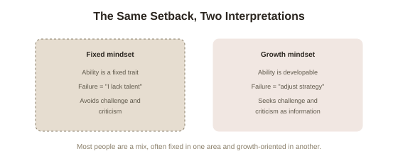

Mindset — Carol Dweck
Carol Dweck's Mindset: The New Psychology of Success (2006) makes a single, deceptively simple claim: what you believe about the nature of ability — whether it's fixed or capable of growing — shapes nearly everything about how you respond to challenge, failure, and effort. Dweck, a psychologist at Stanford, spent decades researching this before writing the book for a general audience, and the framework has since become one of the most widely cited (and, as covered honestly further down, one of the most widely oversimplified) ideas in popular psychology.
Two mindsets, one core belief
Dweck names two contrasting belief systems. A fixed mindset holds that qualities like intelligence, talent, and personality are essentially set traits — you have a certain amount, and that's that. A growth mindset holds that these same qualities are starting points that can be developed substantially through effort, strategy, and the input of others. The book's central argument is that this single belief — often held unconsciously, without a person ever explicitly deciding on it — quietly determines how someone interprets almost every setback and success in their life.
Someone in a fixed mindset treats failure as data about their fundamental worth: if they failed, that reveals a lack of talent, permanently. Someone in a growth mindset treats the same failure as data about their current strategy: if they failed, that reveals what to adjust next time. Same event, radically different meaning — and Dweck argues that meaning, repeated over thousands of small moments across a life, adds up to genuinely different outcomes.

The research behind it: praising children, and what it actually changes
The book's evidentiary backbone is a series of studies Dweck ran, most famously with children given a set of solvable puzzles. After completing them, one group was praised for their intelligence ("you must be smart at this"), while another group was praised for their effort ("you must have worked hard at this"). The children then chose between a harder puzzle they'd learn from or an easy one they'd look good on — and the intelligence-praised group overwhelmingly chose the easy, safe option, while the effort-praised group chose the harder, more revealing one. When later given a genuinely difficult puzzle set designed to produce failure, the intelligence-praised children's confidence and enjoyment collapsed and their performance on a subsequent easy set actually got worse than their first attempt; the effort-praised children stayed engaged, treated the difficulty as normal, and their subsequent performance improved.
The unsettling implication: praise intended purely as encouragement ("you're so smart") can quietly teach a fixed mindset, because it frames the child's value around a fixed trait rather than a changeable process — and it's specifically praising the outcome (being smart) rather than the process (working hard, trying a new approach) that produces the effect.
Where the book applies the idea: sports, business, and relationships
Much of the book's length is spent applying the two-mindset framework outside the lab, through real-world case studies and profiles. In sports, Dweck contrasts athletes and coaches who treat talent as fixed (and therefore treat a loss as exposing a limit) against those who treat it as a starting point (and therefore treat a loss as information) — drawing on figures like basketball coach John Wooden, whose famously unglamorous, fundamentals-first coaching philosophy Dweck reads as a growth-mindset system in practice. In business, she profiles corporate leadership failures — including Enron's culture of prizing innate "brilliance" over scrutiny and correction — as an organizational-scale fixed mindset, contrasted against leaders like Lou Gerstner at IBM, who prioritized honest diagnosis of failure over protecting an image of infallibility. In relationships, she argues a fixed mindset treats compatibility and love as something you either have or don't ("we're either soulmates or we're not"), which makes ordinary relationship friction feel like proof of fundamental incompatibility, while a growth mindset treats a relationship as something actively built and repaired over time.
The honest caveat, in keeping with treating this idea carefully
It's worth being direct about something this summary would be incomplete without: large-scale attempts to replicate the real-world benefit of brief growth-mindset training programs — not Dweck's original lab findings, which have held up reasonably well, but the packaged interventions built on top of them — have produced smaller, more inconsistent results than the book's popularity might suggest. A large 2019 study of over 12,000 American ninth-graders did find a real effect from a short mindset intervention, but it was modest and concentrated mainly among already-struggling students, not the dramatic transformation sometimes implied by mindset's popular reputation. The most defensible reading: the underlying psychological pattern Dweck identified is real and well-supported, but no single short exercise, poster, or pep talk reliably installs a growth mindset on its own — it's a belief that gets built the way any belief does, through repeated, lived experience, not a switch you flip by reading about it.
The practical shift the book argues for
Dweck is careful to note that almost nobody is purely one mindset or the other — most people are a mixture, often fixed in one area of life (say, public speaking) and growth-oriented in another (say, cooking). Her practical advice centers on noticing your own "fixed mindset voice" in the moment — the internal reaction that says "I'm not good at this" rather than "I'm not good at this yet" — and deliberately treating challenge, effort, criticism, and other people's success as things to learn from rather than threats to your self-image. The word "yet" recurs throughout the book as close to a mantra: not "I can't do this," but "I can't do this yet," which reframes a permanent verdict into a temporary status update.
Try this
Ideas for noticing or testing this in your own life.
- Notice your own "fixed mindset voice" the next time you fail at something — is the internal reaction closer to "I'm bad at this" or "that's useful information for next time"? Dweck's research suggests this specific reflex matters more than general confidence.
- Practice praising process rather than outcome — with yourself or with someone else — swapping "you're so smart" for "I like the strategy you tried there." The book's core evidence is specifically about this substitution, not praise in general.
Worth pulling on?
A few loose threads — if any of these genuinely grab you, that's a good sign of where to go next.
- This same research — including its real replication caveats — is covered directly, with more neuroscience detail, elsewhere in this library. → Already in the library: Neuroplasticity, Chapter 7 covers Dweck's research alongside the brain-level evidence and the same honest caveat about intervention studies.
- If you're reading this summary alongside a differently-styled one, the contrast itself is worth noticing. → Already in the library: Atomic Habits (James Clear) covers a related but distinct idea — how to actually build the habits a growth mindset motivates — written in a much more casual, conversational style.